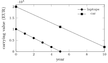

Model
Fixed assets live longer than one year. Instead of charging the whole cost in the purchase year, depreciation spreads it over the useful life, reflecting wear and use.
annual depreciation (quota di ammortamento), useful life in years, carrying amount after years. Assumes full years, no
impairment or revaluation, unchanged estimates.
years. Assumes full years, no
impairment or revaluation, unchanged estimates.
Worked example
10 laptops, total EUR 10,000, life 5 years, residual 0: per year.
| Year | 0 | 1 | 2 | 3 | 4 | 5 |
|---|---|---|---|---|---|---|
| Depreciation | – | 2,000 | 2,000 | 2,000 | 2,000 | 2,000 |
| Carrying value | 10,000 | 8,000 | 6,000 | 4,000 | 2,000 | 0 |
Car: cost 20,000, residual 2,000, life 10 years → ; after 5 years . Machine: cost 12,000, residual 2,000, 5 years → 2,000 per year; after three years 6,000.
Intuition
The asset is a resource consumed over several periods: depreciation matches its consumption with the revenues it helps generate (accrual principle). Each charge lowers the year's profit and the asset's carrying amount, but no cash moves.
Pitfall
Depreciation is not a cash reserve nor a market value. Do not go below the residual value. The purchase payment (cash) and depreciation (cost) are separate events.
Recall
Write both formulas; rebuild the laptop table; compute the car's value after 5 years; explain why depreciation reduces profit but not cash.
Picture

Straight-line depreciation is a straight line down to the residual value.